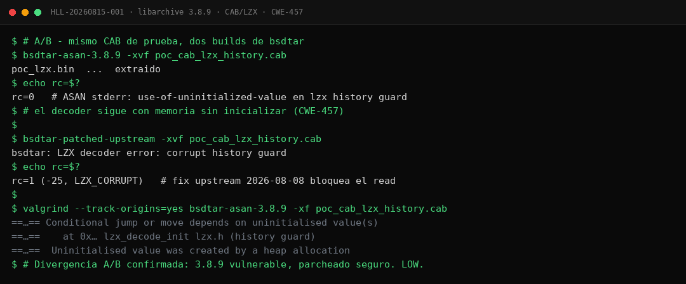

libarchive: Uninitialized Heap Read en CAB/LZX Cazado con Patch-Diffing
Mismo archivo CAB, dos binarios: uno extrae tranquilamente leyendo memoria que nadie inicializó; el otro, con el parche aplicado, rechaza el archivo. Este hallazgo del sistema autónomo Sherlock es doblemente interesante: por el bug en sí —un read no inicializado del history guard del descompresor LZX (CWE-457)— y por cómo se encontró: comparando un snapshot objetivo contra upstream y midiendo exactamente dónde divergen.
/índice_del_análisis +
00. Resumen Técnico
| Objetivo | libarchive / bsdtar 3.8.9 — path de extracción CAB con compresión LZX |
|---|---|
| Vulnerabilidad | Uninitialized heap read del history guard del decoder LZX (lzx_read_blocks) durante la extracción |
| CWE | CWE-457 (Use of Uninitialized Variable) · VRT: MCR (read) |
| Severidad | LOW — solo lectura de valores no controlados directamente; sin escalada a escritura |
| Detección | Divergencia post-snapshot: fix upstream del 2026-08-08 ausente en el snapshot del target |
| Método | Patch-diffing + comparación A/B con el mismo input CAB sobre dos builds de bsdtar |
| Resultado A/B | Build vulnerable: rc=0, extrae (con lectura no inicializada). Build parcheado: rc=1 (-25, LZX_CORRUPT) |
| Validación | ASAN (use-of-uninitialized-value) + valgrind --track-origins=yes |
| Clasificación | DUP-RACE — el fix llegó por otra vía dentro de la ventana de análisis; se documenta como caso metodológico |
01. Contexto: Snapshots que Envejecen Mal
Analizar un target serio exige construirlo: compilar la versión concreta, instrumentarla, fijar su entorno. Esa construcción es un snapshot —y desde el momento en que existe, empieza a envejecer. Upstream sigue vivo: commits, hardening, fixes. Cada día que pasa, tu snapshot fiel deja de serlo un poco más.
Esta historia nace de esa tensión. El sistema Sherlock mantiene un snapshot de libarchive 3.8.9 para sus campañas de fuzzing sobre formatos de archivo. Durante la revisión periódica contra upstream apareció un commit del 2026-08-08 que tocaba justo el camino CAB/LZX que el snapshot ejercita: un hardening frente a lectura de memoria no inicializada en el history guard del decoder LZX. Pregunta inmediata: ¿el snapshot contiene ese fix? Respuesta corta: no. Pregunta larga: ¿qué significa eso en la práctica? El resto del artículo es la respuesta.
02. El Método: Patch-Diffing como Radar
El patch-diffing suele asociarse a martes de parches de grandes vendors: comparar binarios antes/después para localizar la vulnerabilidad corregida. Pero tiene un uso inverso igual de potente para quien caza con targets propios: usar los commits upstream como radar de zonas calientes. Si el proyecto acaba de blindar una ruta de código, esa ruta era frágil ayer —y cualquier versión viva sin el parche lo sigue siendo hoy.
03. Anatomía: El History Guard sin Inicializar
El algoritmo LZX —el que comprimían los instaladores de Windows y los ficheros CAB antiguos— mantiene un historial de ventana: los últimos kilobytes de salida descomprimida, que las instrucciones de match reutilizan como diccionario. Para acelerar la decodificación, la implementación de libarchive lleva controles auxiliares sobre ese historial; uno de ellos es el history guard, que decide cuándo el estado del historial es válido.
El problema: en ciertas secuencias de bloques CAB malformadas, el guard se consulta antes de haber sido escrito. El heap entrega lo que había en esas direcciones —basura de usos anteriores— y el decoder toma decisiones de decodificación basadas en ella. Formalmente es CWE-457: comportamiento dependiente de valores no inicializados. En la práctica observada, la consecuencia visible era que archivos que deberían ser rechazados como corruptos se «decodificaban» hasta el final, consumiendo la basura como si fuera estado legítimo.
Los sanitarios lo confirman con precisión quirúrgica: AddressSanitizer reporta use-of-uninitialized-value en el camino del guard durante lzx_read_blocks, y valgrind con --track-origins=yes remonta el valor hasta su origen: una asignación de heap cuyo contenido nunca se escribió antes de leerse.
04. El Experimento A/B
La validación mínima de una divergencia es comparar los dos mundos con todo lo demás constante: mismo input CAB que recorre el path del history guard, misma invocación de extracción, única variable = el parche.

La asimetría de veredictos es el resultado completo: un archivo que el código correcto considera corrupto atraviesa el código vulnerable sin levantar sospechas. Ese es exactamente el tipo de silencio que un read no inicializado produce —y el tipo de señal que un A/B bien montado vuelve audible.
05. La Clasificación Honesta: DUP-RACE
Aquí el sistema aplicó una regla que vale tanto para humanos como para agentes: verificar la fecha del fix antes de reclamar prioridad. El hardening upstream databa del 08-08 —una semana antes de la detección—, lo que sitúa el descubrimiento dentro de una carrera perdida: alguien reportó el problema primero y upstream ya lo había cerrado. El hallazgo se archiva como DUP-RACE: real, reproducible, pero duplicado respecto a la línea temporal oficial.
Tres razones. Primera: el valor metodológico —el patch-diffing como radar— sobrevive al destino del bug concreto. Segunda: millones de sistemas siguen ejecutando builds sin el fix; saber que el path existe ayuda a operadores a priorizar actualizaciones de libarchive. Tercera: la honestidad taxonómica es parte del contrato de esta serie; un dup-race documentado enseña más que un hallazgo inflado.
06. Acotación: Por Qué es LOW
- Solo lectura: el defecto consume valores no inicializados para decidir flujo interno; no hay primitiva de escritura ni corrupción de estructuras adyacentes.
- Valores no controlados directamente: el atacante condiciona que se lea basura, pero no qué basura —el contenido depende del estado previo del heap, no de bytes elegidos del input.
- Efecto observable limitado: aceptación de streams corruptos y decisiones internas contaminadas; sin fuga directa de datos al output en el escenario observado. Escalarlo a info-leak exigiría encadenarlo con superficies adicionales que este análisis no persiguió.
07. Lecciones Metodológicas
Más allá del CWE, este caso dejó tres reglas operativas al sistema:
- La fecha del fix importa tanto como el fix: una divergencia detectada días después del commit upstream casi siempre es carrera perdida; reconocerlo rápido ahorra semanas de maduración inútil y protege la credibilidad del programa.
- El A/B con build ASAN es la validación mínima: una divergencia solo afirmada por diff de código es una hipótesis; con dos binarios y un input, es un experimento. La diferencia entre ambos estados es la diferencia entre creer y saber.
- Los commits upstream son inteligencia gratuita: cada hardening señala una debilidad histórica y delimita las versiones vivas que aún la padecen. Revisarlos periódicamente convierte el repositorio ajeno en sensor propio.
08. Conclusión
No todos los hallazgos terminan en CVE propio, y está bien que sea así. Este caso demuestra que un sistema de caza maduro también sabe perder carreras con elegancia: detectar la divergencia, medirla, clasificarla honestamente y extraer de ella el activo duradero —el método—. El history guard de LZX ya está protegido upstream; el patch-diffing como radar, en cambio, apenas empieza a dar sus primeros resultados.
Para operadores, el recordatorio práctico: si vuestra distribución todavía sirve builds de libarchive sin el hardening de agosto, los CAB malformados pueden atravesar vuestro extractor con éxito aparente. Actualizar no es burocracia; es cerrar puertas que otros ya saben dónde están.
/Más hallazgos de la serie Sherlock
Siete vulnerabilidades confirmadas en un mes de caza autónoma con modelos locales de IA. Todos los análisis con evidencia y diagramas.
09. Referencias
- libarchive — sitio oficial del proyecto
- MITRE CWE-457: Use of Uninitialized Variable
- AddressSanitizer — MemorySanitizer y detección de valores no inicializados
- Valgrind Memcheck — track-origins
- Especificación LZX (Microsoft Compression Scheme)
- Sherlock: Caza Autónoma de Vulnerabilidades con Modelos Locales de IA (tty503.com)
- SAINT GRAIL Go: CRC Bypass en 7-Zip 9.20–25.01 (tty503.com)